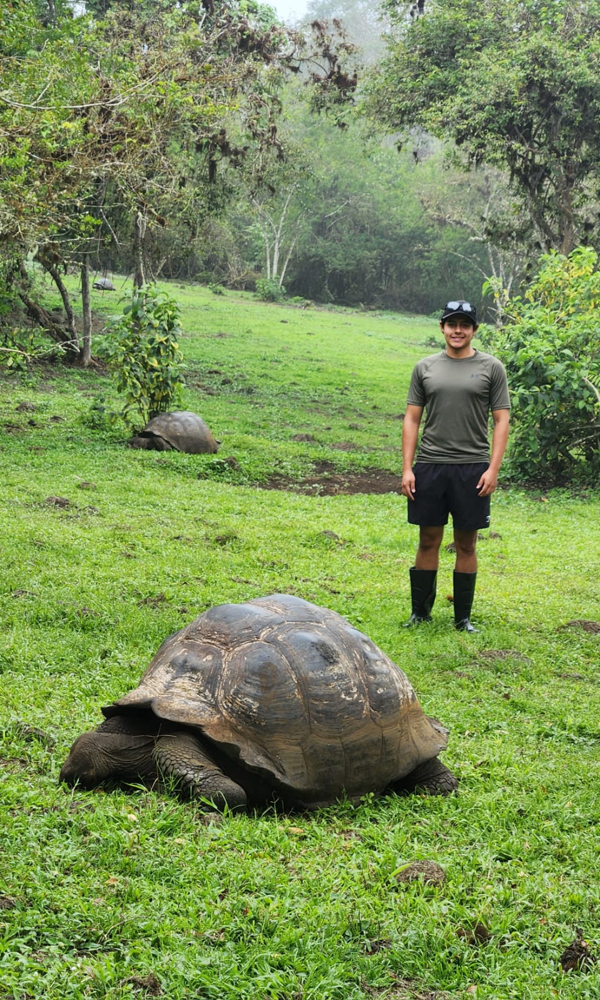

Introduction
with a Galapagos Tortoise
- Personal Background: I am from the Galapagos Islands in Ecuador. I came to Charlotte 2.5 years ago to study.
- Professional Background: I am a TA for ITSC 2181. I volunteered in the Galapagos National Park during the Summer, working with the Software Development team. I mostly worked on the responsiveness of a data recollection application and also compiled it on macOS to make it work on iOS devices.
- Academic Background: I am a Junior studying Computer Science at UNCC with a concentration in Software Engineering. I studied two years at CPCC and then transferred here.
- Background in this Subject: I have never worked with frontend development. I have always wanted to learn about it, so this will be the time.
- Primary Computer Platform: Windows 11 (Always.).
-
Courses I'm Taking & Why:
- ITSC3112 - Design & Implementation of Object-oriented Systems: It is a project-based course, so it will be great to have something to add to my resume.
- ITIS3135 - Web Application Design and Development: I am eager to learn about web development. I think it is very important to know how to use HTML, CSS, and JavaScript.
- ITSC3146 - Intro Operating Systems & Networking: I have to take this course, but I also want to learn about Operating Systems because they are essential.
- ITSC3155 - Software Engineering: This course is literally named after my major, “Software Engineering.” It’s a very important class to understand how the work environment operates.
- STAT2122 - Intro to Probability & Statistics: I have to take this course in order to graduate. It is my last math-related course (hopefully).
- Funny/Interesting Item to Remember Me By: I am from the Galapagos Islands, where Charles Darwin’s Theory of Evolution originates.
- I'd also like to Share: I like trying food from different countries.